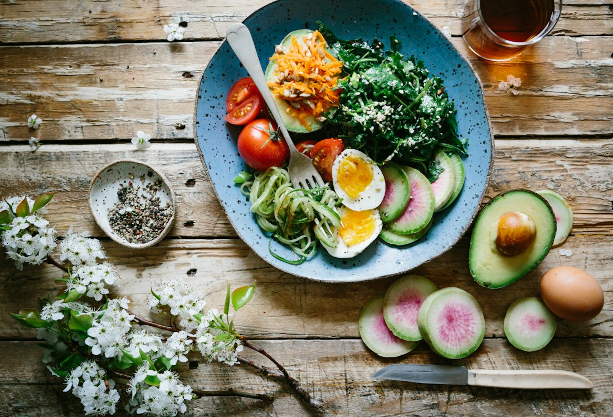

Research & evidence synthesis
Structured literature searches, screening, extraction and synthesis of academic and grey literature.
Turning research questions into clear evidence across food, nutrition, health and business.
Good research begins with a question. Meaningful research stays connected to the people it can serve.
My foundation is in Food Science and Technology, where I graduated with First Class honours from Federal University Oye-Ekiti. Today, my work spans research support, quantitative analysis and evidence synthesis across food science, health, social care and business.
I’m particularly interested in how food production, storage technology and data can contribute to nutritious, safe, affordable and sustainable food products.
Download my CV ↓From finding the right evidence to understanding what the numbers say, I support each stage with care and structure.
Structured literature searches, screening, extraction and synthesis of academic and grey literature.
Cleaning and managing datasets, statistical analysis, interpretation and clear presentation of findings.

A practical grounding in food formulation, nutritional evaluation, food production and quality control.
Nutritional evaluation of complementary food formulated from millet, African yam bean, crayfish and Moringa oleifera leaves.
I formulated complementary diets and evaluated growth performance and protein quality through a 28-day animal bio-assay. The study explored their nutritional potential in the context of infant malnutrition.
Six groups of albino rats received the formulated diets ad libitum. Growth performance was assessed during feeding, and protein content in tissue samples was evaluated. Data were analysed using IBM SPSS version 21.
Supervisor: Dr. (Mrs.) A. B. Adepeju, Federal University Oye-Ekiti.
Research, analytical collaboration and hands-on experience across food production and quality.
Supporting structured literature reviews on women-led food enterprises, nutrition, food environments, enterprise development and impact-linked investment in Nigeria.
Supporting local and international researchers with literature searches, quantitative analysis, methodological guidance and research reporting.
Contributing to a beginner-level Jamovi course and collaborating on organisational case studies, business models, SWOT and PESTEL analyses.
Supported bakery, confectionery and packaged-water production, with attention to consistency, quality and process improvement.
Performed physical and chemical analyses of beverage and water samples and inspected product labelling and SOP compliance.
Alongside my analytical work, I contribute as a research writing and research tutor with ONE Project Initiative.
Steg Technology Hub · In progress
Excel, Power BI, Tableau, Python & SQL
FAO e-learning Academy · June 2026
Concepts, frameworks and operational approaches
Nigerian Institute of Food Science and Technology
October 2026 – Present
Have a research project, a dataset that needs clarity or an opportunity to collaborate? I’d love to hear about it.
rachealolajide98@gmail.comLinkedInOyo State, Nigeria